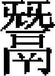

游顯 賈居貞鈞 趙炳 李德輝吕 ［一］ 張德輝 馬亨 何榮祖 程思廉
［一］ 張德輝 馬亨 何榮祖 程思廉
游顯，字子明，本代州崞縣大姓。金宣宗遷汴，徙其族於許州臨潁。太宗四年，拔許州，顯隸大帥巴而思不花部下，以善國語，擢爲經歷。後與千户阿思蘭從諸王伐宋，略房州，禽宋將何太尉。襄陽下，授副達魯花赤。十年，襄陽别將劉義叛，執顯等送於建康。宋將劉石河薦其才於制置使孟珙，珙移鎮鄂州，使顯從石河戍淮北，遂與田僧住二騎夜遁，至新野境，遇阿思蘭巡徼，偕至察罕軍中。十二年，入覲，太宗賜白金五萬兩、錦衣二襲，襄陽新附民二百家爲佃户，且曰：「昔太祖時，一回鶻人迎降，授以璽書，從其所爲。今亦授卿璽書，從其所爲。」
憲宗即位，授金符，爲大帥卜憐吉歹佐。瀕行，賜之酒，辭，帝曰：「卿朕前不飲，將飲無人處耶？」對曰：「臣不敢面欺，今效死行間，從此十年不飲酒。」帝大悦。八年，帝自將伐蜀，顯謂：「道路險遠，饋運甚艱，六師出此，非萬全之策，不如從關東直臨江漢。」帝曰：「朕業已至此，關東之事付之朕弟，宜即彼言之。」九年，世祖自開平南伐，顯謁見湯陰。至黄陂，使顯督别帖萬户戰船。篙工不足，顯取降人立兩幟，下令之曰：「能用篙者左，否則右。」得九百人濟江。授銀章，行宣撫使事。
世祖踐阼，詔顯位中書左丞、大名宣撫使張文謙下。中統二年，代文謙爲宣撫使。三年，李璮反，以顯行宣慰司於大名、洺、磁、懷、孟等州，及河南東西兩路，皆隸之。有誣顯嘗與璮通書者，帝曰：「顯豈爲此事？鷙鳥爲狐所憎耳！」及籍璮家，果無顯書。敕以誣告人付顯，聽其甘心，其人亡命。逾年，顯召其妻子，諭使出，其人膝行祈死，顯曰：「汝生死惟吾，其忍殺汝？」待之如平時。
顯以平賊入賀。故事，非國人不入宫門，席地坐，不設榻，侍宴不稱觴。至是，顯請稱觴，詔允之，並賜黄金一斤。他日，帝宴坐虎帳，顯至，衛士呵止之，呼於廷中。帝曰：「是非游顯聲耶？」召入，詰之，顯以實對，帝命之出。裕宗時爲中書令，適至，復召入，俾盡所言。對曰：「臣聞將改宣撫司爲宣慰司。若不選賢能任之，雖變易官名，猶惡鼓不鳴，而新其枹聲，豈加大耶？」因歷短諸臣，無少隱借。帝顧裕宗曰：「汝他日求可用者，須此輩人。」
至元二年，進嘉議大夫、益都路總管。未幾，改南京路總管。四年，改大都路總管，兼府尹。乘輿歲至大都居冬，餱糧藳秸，多不給直，率出於中下之户，豪强不及。顯以物力多寡差賦之，民力紓其半。入言：「安童、伯顔兩丞相，一治中書事，一爲樞密，則軍政必齊肅於前。」從之，以伯顔同知樞密院事。六年，授河北、河南道提刑按察使。八年，改總管襄陽水軍萬户，又改陝西、四川道提刑按察使。皇子安西王出鎮陝西，載順聖皇后賜物數十車，用事者欲置於憲府，副使張庭瑞不受。皇子聞其事，將按治庭瑞［二］，顯力爲陳辯，且責同事者曰：「昔線真罷右丞相，入爲宣徽使，有干以事者，謝曰：『吾守

釜者，他非所知。』汝乃王之庖人，不師此而越職沮撓風紀，儻帝聞之，謂王不戢左右，奈何？」皇子雖不説，然素知顯爲人，由是庭瑞得免重譴。伯顔濟江，授顯前軍宣撫使。大軍圍平江，顯以七騎抵城下，呼曰：「我游宣撫也。告汝州將，宜早納款。」宋將王安撫即以城降。授顯平江路宣撫使。十四年，遷中訓大夫、浙西道宣慰使。入覲，帝顧謂之曰：「卿老人，宣力多年。」賜榻坐，輟大官所上食之，賜白貂裘。顯奏言：「江南賴陛下神武，文軌已同，惟官吏敷宣聖化者，不稱任使。」敕與中書言之。十六年，遷中奉大夫、中書右丞、行浙西宣慰使。十九年，拜榮禄大夫、江淮等處行中書省平章政事。卒，年七十四。
顯推誠感物。有竊戍兵馬者，律當倍償，顯先假公帑償之，與盜期，歸取於家；如期而反，悉輸官罰。在平江，貸倉穀一百三十萬於民，約秋熟償官，及期無少折閲。二事人尤頌之。
子永錫，海北廣東道廉訪使；永禄，知綏德州。
賈居貞，字仲明，真定獲鹿人。祖守謙，金尚書右丞。父頤，金蔡州觀察推官。居貞甫冠，爲行臺從事，有餽黄金五十兩者，居貞卻之。太宗聞其事，稱爲清慎，特敕有司給銀百兩。世祖在潛邸，召對稱旨，使監築上都城，以母憂歸。中統元年，授中書左右司郎中。居貞習國語，命特入奏事。從帝北征，賜西錦服，以賞其勞。一日，帝問郎俸幾何，居貞如數對。帝謂太薄，敕增之。居貞辭曰：「不可以臣而紊官制。」劉秉忠奏居貞參知政事，又辭曰：「他日有援臣例求執政者，何以處之？」帝嘉其能讓。
至元元年，授參議中書省事。與左丞姚樞行省河東山西，罷諸侯世襲，立遷轉法。五年，再爲左右司郎中。阿合馬當國，忌之，改給事中，同丞相史天澤等纂修國史。十年，克宋襄陽，以居貞知襄陽府，旋擢襄陽路總管，佩虎符。十一年，伯顔伐宋，授居貞宣撫使，議行省事。鄂州降，留居貞與阿里海牙戍之，授僉行中書省事。居貞建議曰：「江陵要地，宋制閫重兵所屯。聞諸將不睦，城中又患疾疫，薪芻乏絶，閉門不敢樵採。宜乘間取之，若春水漲，彼乘上流而下，則鄂、漢危矣。」驛聞，詔從之。十二年春，阿里海牙攻江陵，使居貞守鄂州。居貞嚴戢吏卒，有縱暴於民者，立斬之。發倉廪以振流亡，弛湖荻禁，免括商船，聽民用宋之楮幣，宋宗室仰食於官者，依舊廪之，州境遂安。宋將婁安邦以信陽降，入覲，裨將陳思聰屠其家。居貞以計召思聰至，數其罪，誅之。蘄州盜起，屬縣民傅高亦聚衆應之。居貞移檄諭以禍福，衆皆降，獲高，磔死。居貞初遣萬户鄭鼎討賊，鼎疑城中大姓皆與高通謀，請殲之以絶禍本，居貞不從。鼎留其部將於鄂，戒之曰：「吾還軍，汝即舉烽，内外合發，當盡殺城中大姓。」會鼎戰敗溺死，其事洩露，鄂人尤感頌居貞。十四年，拜中奉大夫、湖北宣慰使。
十五年，遷參知政事。未幾，改江西行省參知政事。瀕行，老幼號泣相送，刻其像祀於州學。詔捕受厓州僞命者，逮繫三百餘家，居貞悉出之，下令凡收藏宋告身者，悉投水火，有妄訐者坐死。十五年，江西大水，居貞發粟振之，遣吏具舟載糜粥以食餓者，全活無算。冬，大雪墮地旋消。右丞塔出，貴胄也，顧謂居貞曰：「國家有江南，北寒宜減三月。」居貞曰：「相公襲貂裘，熾炭於前，張幄於後，言是則宜。彼庭立之甲士，必以爲加三月矣。」塔出謝其失言，由是師事居貞，事無大小，悉以咨之。南安李梓發作亂，居貞請自討之，諭其衆降，梓發自焚死，不戮一人。都昌杜萬一僭號，擁衆數萬，居貞曰：「都昌與吾南康祇隔一湖，不速馘此賊，南康將亂。」乃遣部將方招討伏兵舟中，僞爲賈，徑造都昌，禽萬一，磔之。有列通賊姓名百餘人來上者，居貞曰：「元惡已誅，蔓延何爲？」取其牒燒之。
十七年，朝廷再伐日本，造戰艦於江南。居貞欲入朝奏罷其事，未行，以疾卒，年六十三。贈推忠輔義功臣、銀青榮禄大夫、中書平章政事，追封定國公，諡文正。
居貞貌粹言温，侃侃易直。性好學，軍中以橐駝負書讀之。從世祖北征，猶進講《資治通鑑》。子鐸，淮東宣慰使；鏞，禹城尹；鍔，知鹽官州；鈞，最知名。
鈞，字元播。幼淵默有度量。由榷茶提舉拜監察御史，出僉淮東廉訪司事、行臺都事，入爲刑部郎中，改右司郎中、參議中書省事。至大二年，拜參知政事，議罷尚書省所立法。遷僉書樞密院事。三年，復改參知政事，賜錦衣、寶帶。鈞爲政持大體，不孑孑鈞名譽。皇慶元年，卒。詔賻錢三百萬。子汝立。
趙炳，字彦明，惠州灤陽人。父弘，有勇略，元初爲征行兵馬都元帥。炳幼孤，鞠於從兄。歲饑，就食平州，遇盜，縛兄，將殺之。炳年十二，泣請代死，盜驚異，舍之而去。甫冠，以勳臣子侍世祖於潛邸，性勤恪，眷顧日厚。世祖復立撫州，即以炳爲撫州長官。憲宗九年，王師伐宋，括兵斂財，燕薊騷動。師還，炳迓於中途，具以事聞，返所括兵及横斂之財於民。
中統元年，命判北京宣撫司事。時參知政事楊果爲宣撫使，聞炳至，喜曰：「吾屬無憂矣！」三年，括北京鷹房等户丁爲兵，蠲其賦，使炳統之。時李璮叛據濟南，炳將千人從大軍討璮，獨當城北面，有俘獲輒縱之去，曰：「脅從者不足治也。」濟南平，入爲刑部侍郎，兼中書省斷事官。有攜妓登龍舟者，炳按以法。未幾，其人死，子訴冤，詔讓之。既而謂侍臣曰：「炳用法太峻，然非徇情者。」改樞密院斷事官。濟南妖民作亂，授炳濟南路總管，賜金虎符，加昭勇大將軍。炳至，止誅首惡，餘黨悉解散。歲凶，發廪賑民，而後上聞，朝廷不之罪也。遷遼東提刑按察使。
至元九年，帝以陝西重地，思用剛鯁舊臣治之，徙炳京兆路總管，兼府尹。皇子安西王開府陝西，詔王治宫室，悉聽炳裁制。王府吏卒横暴，炳以法繩之。王曰：「後有犯者，勿啟請，君自處之可也。」由是豪猾斂戢。詔以解州鹽賦給王府經費，歲久積逋二十餘萬緡，有司追理，僅獲三之一，民已不堪。炳密啟於王曰：「十年之逋，豈可責償一日？與其裒斂病民，孰若貸之？」王善其言，遽命免徵。會王北伐，詔以京兆一年之賦充軍資，炳復請曰：「所徵逋課，足供軍用，請免歲賦以蘇民。」令下，秦民大悦。十四年，加鎮國上將軍、安西王相。王府冬居京兆，夏徙六盤山，歲以爲常。王北伐六盤，守者搆亂。明年春，六盤再亂。炳悉討平之。王還，賚賜有加。
是歲十一月，王卒。十六年秋，詔炳入覲，帝勞之曰：「卿去數載，衰白若此，關中事煩可知。」及詢民間利病，炳悉陳之，因言：「王卒之後，運使郭琮、郎中郭叔雲竊弄威柄，恣爲不法。」帝卧，遽起曰：「聞卿言，使老者增健。」飲以上尊馬湩，改中奉大夫、安西王相，兼領陝西五路、西蜀四川課程、屯田事，餘職如故。即令乘傳，偕敕使數人往按之。至則琮等假王妃之命，入炳罪，收炳及其妻孥囚之。王妃在六盤，徙炳於平涼北崆峒山。炳子仁榮訴於上，詔近侍二人馳驛至六盤，械琮等偕來。琮等留使者，醉以酒，先遣人毒炳於平涼獄。其夜星隕，有聲如雷，炳年五十九，時十七年三月也。帝聞之，撫髀歎曰：「失我良臣！」俄械琮等百餘人至，帝親鞫之，盡得其實。命仁榮手刃琮、叔雲於東城，籍其家以付仁榮。仁榮辭不受。帝善之，别賜鈔二萬二千五百緡爲治喪具。蒙古舊制，無賻臣下禮，異數也。六月，詔雪炳冤，特贈中書左丞，諡忠愍。子六人：仁顯、仁表、仁榮、仁旭、仁舉、仁軌。仁榮，大德八年拜中書參知政事。
李德輝，字仲實，通州潞縣人。生五歲，其父將卒，指德輝謂家人曰：「吾爲吏，治獄不尚苛刻，天或報之。是兒其大吾門乎！」父卒，德輝哀毁如成人。及長，嗜讀書，家貧無以自給。年十六，監豐州酒税，有暇則市筆札録書，夜誦之。未幾，自免歸，從先生長者講學。世祖在潛藩，用劉秉忠薦，使侍裕宗講讀。京兆爲世祖分地，擇能理財賦者供給軍儲。立從宜府，以德輝與孛得乃爲使。時汪德臣屯利州，扼四川襟喉，數萬之師仰哺於從宜府。德輝募民入粟，散錢幣，給鹽券爲直，陸挽興元，水漕嘉陵，未期年，軍儲充羨。
中統元年，調燕京宣撫使。燕多劇賊，造僞鈔，結死黨殺人。德輝悉捕誅之，令行禁止。然事多不白中書，由是忤平章王文統意，罷去。三年，文統以反誅，德輝起爲山西宣慰使。勢家籍民爲奴者，咸免之，復業近千人。
至元元年，罷宣慰司，授太原路總管，兼府尹。至郡，有惠政。五年，徵爲右三部尚書。有訟財而失其兄子者，德輝曰：「此叔殺之無疑。」遂竟其獄。權貴人爲請者甚衆，德輝不應。罪狀既明，請者慚服。
七年，帝以蝗旱爲憂，命德輝録囚山西、河東。行至懷仁，有魏甲發得木偶，告其妻挾左道爲厭勝，謀不利於己，已定讞。德輝察其冤，知魏妾所爲。召妾鞫之，不移時而服，遂杖其夫而論妾死。
初，德輝與阿合馬同侍帝於潛邸，至是，爲平章政事用事，德輝不至其門，阿合馬求好，拒之愈力。後阿合馬敗，人皆歎服。
八年，授中奉大夫、參知北京行尚書事。九年，罷尚書省，以故官參知北京行中書省事。皇子安西王鎮關中，改安西王相。至則視涇河營牧故地，可得數千頃，起廬舍，疏溝澮，假牛種田，歲得粟麥芻藳萬計。
十二年，詔以王相宣撫西川。時重慶猶城守不下，朝廷置行樞密院於東、西川，合兵萬人圍之。德輝至成都，兩府争遣使咨受兵食方略，德輝戒之曰：「宋已亡矣，重慶以彈丸之地不降，何待？政懼公輩之殺掠耳！嚮日中使奉璽書肆赦，公輩既不肯明言以須其至，反購得軍吏杖之，僞爲得罪，投入城中，水陸之師繼進，是堅其不下也。中使不喻詐計，竟以不奉詔復命，如是者非玩寇而何？况軍政不一，朝夕敗矣，豈能成功？」德輝返，未至陝西，瀘州叛，而重慶之兵果潰。
明年，再圍重慶，踰月拔之。紹興、南平、夔、施、思、播諸山栅皆下，而東川樞府尚獨圍合州。德輝乃出合州俘繫順慶獄者，縱之使歸，語州將張珏，以「宋室既亡，三宫皆北，能早自歸，必取將相與夏、吕比」。又爲書以禮義禍福，反復譬解之，以爲「汝之爲臣，不親於宋之子孫；合之爲州，不大於宋之天下。彼子孫已舉天下而歸我，汝猶負阻窮山，而曰『吾忠於所事』，惑莫大焉。」珏未及報。
十四年，詔以德輝爲西川行樞密院副使，仍兼王相。諸軍既發，德輝留成都，給軍食。是年，復瀘州。十五年，合州將王立遣李興、張郃十二人詗事成都，皆獲之。德輝釋不殺，復爲書縱歸，使諭立如諭珏者，辭尤剴切。初，德輝妹爲立所獲，詭稱王氏，兄事立。至是，知德輝在成都，以手書與之，立亦計夙與東川有怨，懼誅，使興等懷蠟書至成都請降。十六年，德輝以兵數百人赴之。東川害其來，皆曰：「公昔爲書招珏，竟無功。今立，珏牙校也，習狙詐不信，特以計致公來，使與吾争功，延命晷刻耳，未必誠降。」德輝曰：「昔合州以重慶存，故同惡相濟。今已孤絶，窮而來歸，亦其勢然。吾非攘人之功者，誠懼公等憤其後服，誣以抗蹕先朝，利其剽奪，而快意於屠城也。吾爲國活此民，豈計汝嫌怒哉！」即單舸濟江，薄城下，呼立出降，安集其民而返。合州人咸繪象事之。
十七年，置安西行中書省，以德輝爲行省參知政事。是年，西南夷羅施鬼國既降復叛，詔雲南、湖廣、四川合兵三萬人討之。兵且壓境，德輝適被命，乃遣安珪馳馹止三道兵勿進。復遣張孝思諭鬼國趣降。其酋阿察熟知德輝名，曰：「是活合州李公，其言明信可恃。」即身至播州，泣且告曰：「吾屬百萬人，微公來，死且不降。今得所歸，蔑有二矣。」德輝以其言上聞，乃改鬼國爲順元路，以其酋爲宣撫使。其後有以受鬼國馬，譖德輝於朝者，帝曰：「是人朕所素知，雖一羊不妄受，寧有是耶！」十月，改安西行省爲陝西四川行省，以德輝爲行省左丞。德輝未聞命而卒，年六十三，諡忠宣。
卒之夕，有星如斗隕於館垣外，德輝歎曰：「吾死徵也。」及卒，蠻夷爲位哭之，哀如私親。王立衰絰，率合州人拜，哭聲震山谷。播州立廟祀之。
德輝招降合州，行院都事吕佐之，州人繪像，與德輝同祀。，字伯充，河内人，後徙京兆。從許衡受學，衡爲國子祭酒，舉爲伴讀。至元十三年，擢陝西道按察司知事，未行，會宋降人言：「有吕子開，爲宋制置司參謀官，今居鄂州，其人知宋事，宜徵用之。」朝廷議遣使召子開。或言：「子開，之從叔，宜遣往。」慨然請行。子開既入覲，拜翰林直學士，辭不就。
十四年，授四川行樞密院都事。李德輝行西院事於成都，獲宋合州守將王立偵卒，將殺之，勸釋之，使歸諭立降，立果降。德輝承制，授立安撫使、知合州。東院忌德輝成功，械立於長安獄。以事至京師，言於許衡。衡白其事於賀仁傑，奏釋立。賜金織衣、刀弓、鞍勒，權行省左右司郎中。十九年，調同知順慶行總管府事，二十年，徵爲國子司業，俱不就。三十年，改華州知州，有惠政。仁宗即位，召拜翰林學士。未幾，以年老致仕，卒，年七十八。贈陝西行省參知政事，追封東平郡公，諡文穆。
張德輝，字耀卿，冀寧交城人。天資剛直，博學，有經濟才。史天澤辟爲經歷官，從伐宋。天澤欲戮逃兵，德輝救止之，配令穴城。光州山民據寨自保，天澤議攻之，德輝曰：「鄉民爲自守計，當曉以禍福。」果相率來降。
定宗二年，世祖在潛邸，召見，問曰：「孔子殁已久，其性安在？」對曰：「聖人與天地相終始，殿下能行孔子之道，性即在是矣。」世祖又問：「遼以釋廢，金以儒亡，有諸？」對曰：「遼事臣不知，金事臣所親睹。宰執中雖用一二儒者，餘皆武弁世爵，及論軍國事，又不使預聞。國之存亡，自有任其責者，儒何咎焉？」世祖然之。又問祖宗法度，德輝指銀盤，喻曰：「創業之君，如製此器，選精金，良匠規而成之，以 後人。宜擇謹厚者掌之，乃永爲寶用。」又問中國人才，德輝舉魏播、元好問、李冶等以對。
後人。宜擇謹厚者掌之，乃永爲寶用。」又問中國人才，德輝舉魏播、元好問、李冶等以對。
三年春，釋奠致胙於世祖。世祖問孔子廟祀之禮，對曰：「孔子爲萬世師，廟祀之禮於孔子無所損益，特以見時君崇儒重道之意耳。」又問：「典兵與宰民者，害孰甚？」對曰：「軍無紀律，信爲民害。若親民之吏，頭會箕斂，以毒天下，則其害尤烈。」世祖曰：「然則奈何？」對曰：「擇宗室之賢者如口温不花使掌兵，勳舊如忽都虎使治民，則天下均受其賜矣。」德輝乞假歸，薦白文舉、鄭顯之、趙元德、李造之、高鳴、李盤、李濤等。又條先務七事，曰：敦孝悌，擇人才，察下情，貴兼聽，親君子，信賞罰，節財用。世祖以字呼之，賜賚優渥。尋與元好問北覲，推世祖爲「儒教大宗師」，世祖悦而受之。因啓：「累朝蠲儒户兵賦，乞令有司覈實奉行」，從之。仍命德輝提調真定學校。
世祖即位，起爲平陽、太原路宣撫使。河東徭役，官吏率賦一征十。德輝覈户籍，均其等第，出納有法，宿弊頓除。又州縣多世守，吏互爲朋黨，德輝取奸贓尤甚者數十人，械庭下，杖而逐之，所部肅然。兵後，孱民依託豪右，及身雇於人者，歲久掩爲家奴，德輝悉還爲良民。是時，平陽路僉兵戍秦、鞏，其帥紐璘重調千餘人，守吏莫敢申理；鳳翔屯田兵八百餘人，屯罷，兵不歸籍。德輝奏還之，悉從其請。
中統二年，考績爲十路最。陛見，世祖勞之，命疏急務，條四事，曰：「嚴保舉以取人才，給俸禄以養廉吏，易世官而遷都邑，薄刑罰而勿屢赦。」世祖嘉納焉。遷東平路宣慰使，奏免遠輸豆粟二十萬斛、和糶粟十萬斛。寶合丁令民税而後輸，德輝曰：「是誣上以朘下也，且孰任後期之責？」奏罷之。宣慰使八剌議誅盜賊，德輝曰：「吾不敢曲法從汝殺人也。」
至元三年，參議中書省事。五年，擢侍御史，辭不拜。或言邊將冒兵廪，敕按之。德輝奏曰：「若重繩以法，則人不自安。今但易其部署，選武毅有斡略者任之，又時委憲司體究，則宿弊自除。」又命德輝議御史臺條例，德輝曰：「御史，執法官，今法令未修，何所據而行？陛下宜慎思之。」有頃，復召曰：「朕慮之熟，卿力行可也。」對曰：「必欲行此，乞立宗正府，以正宗室、外戚，屏絶女謁，毋令奏事，諸局承應人皆得按治之。」世祖默然。德輝請老，命舉任風憲者。疏烏古倫真、張邦彦、徒單公履、張蒙、張肅、李盤、張昉、曹椿年、西方賓、周止、高逸民、王博文、劉郁、孫汝楫、王惲、胡祗遹、周砥、李謙、魏初、鄭扆，凡二十人。卒，年八十。
德輝嘗與元好問、李冶游封龍山，時人號爲「龍山三老」云。
馬亨，字大用，邢州南和人。少孤，事母孝。太宗始建十路徵收課税使，河北東西路使王晉辟亨爲掾，以才幹稱。晉薦於中書令耶律楚材，授轉運司知事，累擢轉運司副使。太保劉秉忠薦亨於世祖，召見潛邸，甚器之。既而籍諸路户口，以亨副八春、忙哥撫諭西京、太原、平陽及陝西五路。既還，圖山川形勢以獻。使者多以賄敗，惟亨等各賜衣九襲。
憲宗三年，世祖征雲南，留亨爲京兆榷課所長官。京兆，藩邸分地也。亨以寬簡治之，不事掊克，涖政五年，民安而課裕。憲宗遣阿藍答兒等覈京兆錢穀，亨輦歲辦課銀五百錠輸之藩府，道出平陽，與之遇。亨策曰：「見之則銀必拘留，不見則必以罪加我。與其銀弗達王府，寧獲罪焉。」避而過之。阿藍答兒果怒，遣使逮之。世祖詢亨曰：「汝往，得無摭汝罪耶？」對曰：「無害，願一行。」乃慰遣亨。既至，窮治百端，竟無所得，惟以支竹課分例錢充公用及僦公廨輦運脚價爲不應，勒償其直而已。世祖知其誣，更賜銀三十二錠。
九年，從世祖攻鄂州。洎北還，遣亨馳驛往西京等處罷所僉軍，並撫諭山西河東、陝右漢中復遣轉餉，饋江北諸軍。中統元年，世祖即位，陝西四川立宣撫司，詔亨議陝西宣撫司事。尋賜金符，遷陝西、四川規措軍儲轉運使。時阿藍答兒等叛，亨與宣撫使廉希憲、商挺謀誅之。尋建行省，命亨兼陝西行省左右司郎中。興元糧五萬石欲轉餉太安軍，計傭直萬緍，衆推亨往。時丁内艱，以攝省府事强起之。至則以兵官丁産均其役，不閲月而事集。興元判官費正寅狡悍不法，亨白省府，欲以法繩之，反誣構行省前在關中有異謀。詔左丞粘合珪讞之。亨力辯，其冤始得釋。
四年，遷陝西五路、西蜀四川廉訪都轉運使。未幾，朝廷以考課，檄諸路轉運使至京師，併轉運司入總管府，授亨工部侍郎、解鹽副使。亨上言：「以考課定賞罰，其人甫集，而一切罷之，則是非安在？宜還其命書，俾仕者有所勸勉。」從之。
亨復上便宜六事：「一曰東宫保傅當用正人，以固國本；二曰中書大政擇任儒臣，以立朝綱；三曰任相惟賢官，不必備，今宰相至十七員，宜加裁汰；四曰左右郎署毗贊大政，今用豪貴子弟，豈能贊襄？五曰六曹之職分理萬機，今止設左右二部，事何由辦？六曰建元以來，便民條畫已多，有司往往視爲具文，宜令憲司糾舉，務在必行。」疏聞，帝即召見，問：「卿比安在，胡不早言？」亨對曰：「新自陝西來覲。」帝諭曰：「卿久著忠勤，自今不令卿遠出矣。」至元三年，進嘉議大夫、左三部尚書，尋改户部尚書。有賈胡恃制國用使阿合馬，欲貿交鈔本，私平準之利，以增歲課爲辭。帝以問，亨對曰：「交鈔可以權萬貨者，法使然也。法者，主上之柄。今使一賈擅之，廢法從私，將何以令天下？」事遂寢。
七年，立尚書省，仍以亨爲尚書，領左部。亨上言：「尚書省專領金穀百工之事，銓選宜歸中書，以示無濫。」尋爲平章阿合馬所忌，以誣免官。會大兵圍襄、樊，廷議河南行省調發軍餉，詔以阿里爲右丞，姚樞爲左丞，亨爲僉省，任其事。十年，還京師，以病請告。十四年卒，年七十一。子紹庭，雲南諸路肅政廉訪司副使。
何榮祖，字繼先，其先太原人，金亡徙家廣平。榮祖狀貌魁偉，額有赤文如雙樹，背負隆起。有相者謂曰：「子位極人臣，且壽相也。」何氏世業吏，榮祖尤爲通敏。累遷中書省掾，擢御史臺都事。始折節讀書，日記數千言。阿合馬方用事，置總庫於其家，以收西方之利，號曰和市。監察御史范方等劾之，論甚力。阿合馬知榮祖主其謀，奏爲左右司都事，以隸己。未幾，御史臺除治書侍御史，擢侍御史。又出爲山東按察使。
有帖木剌思者，以貪墨爲僉事李唐卿所劾，適濟南有上變者，唐卿察其妄，取訟牒焚之。帖木剌思乃告唐卿縱反者，逮繫數十人，獄久不決。詔榮祖與郝禎、耿仁鞫之。榮祖得其情，欲抵告者罪。禎、仁議以失口亂言之罪坐之，榮祖不可。俄遷河南按察使，仁等竟薄其罰予杖，然株連者俱得釋，唐卿之誣亦白。
平涼府言有降民二十餘口，叛歸江南，安西行省欲上聞，會榮祖來爲參政，止之曰：「何必上聞朝廷？此輩去者，皆人奴耳。今聞江南平，遁往其家，移文捕之可也。」已而逃者俱獲，果人奴也，治以本罪，而付其主。其涖事明決多類此。
除雲南行省參知政事，以母老辭。又拜御史中丞，復出爲山東、山西道按察使。時宣慰使樂實、姚演開膠州海道，敕禁戢諸人沮撓。糧舶遇暴風，多漂覆，樂實弗信，督漕卒償之，搒掠酷毒，自殺者相繼，按察官懼違制，莫敢言。榮祖曰：「第言之！若朝廷見譴，吾自當之！」即入奏，詔免其徵。
至元二十五年，召爲中書參知政事。二十六年，改尚書參知政事。時桑哥專政，亟於理算錢穀，人受其害。榮祖數請罷之，帝不從，懇請不已，始稍緩之，而畿内民苦尤甚，榮祖每以爲言。同僚曰：「上既爲免諸路，惟未及京師，可少止，勿言也。」榮祖執愈堅，至於忤旨，不少屈，竟不署其牘。未踰月，其弊皆上聞，帝乃思榮祖言，召問所宜。榮祖請於歲終立局考校，人以爲便，著爲令。詔賜鈔萬二千貫。榮祖既與桑哥異議，乃以病告，特授集賢大學士。
二十八年，起爲尚書左丞。桑哥敗，改右丞。奏行所定《至元新格》。請改提刑按察司爲肅政廉訪司，而立監治之法。又上言：「國家用度，不可不足；天下百姓，不可不安。今理財者弗顧民力之困，言治者弗圖國計之大。且當用之人恒多，而得用之人恒少，省部宜擇材用之。按察司雖監臨一道，其職在於除蠹弊，苟有弗至，則臺、省又當遣官體察之，庶有所益。」帝深然之。屢以老疾乞解機務，詔免署事，惟預中書省議，而食其禄。
三十一年，拜昭文館大學士，預中書省事，又加平章政事。以水旱請罷，不允。先是，榮祖奉敕定律令，書成已久，至是乃得請於上，詔未及頒行，適子秘書少監惠卒，遂謝病返廣平。卒，年七十九。贈光禄大夫、大司徒、柱國，追封趙國公，諡忠肅。
榮祖身至大官，而僦第以居，飲器用青瓷杯。中宫聞之，賜以上尊及金五十兩、鈔二萬五千貫，俾置器買宅，以旌其廉。所著有《大畜十集》，又有《學易記》、《載道集》、《觀物外篇》等書。
程思廉，字介甫，其先洛陽人，後徙東勝州。父恒，佩金符爲沿邊監榷規運使、解州鹽使。思廉從白恪受業，學有師法。中統元年，用太保劉秉忠薦，給事裕宗潛邸，以謹愿聞，命爲樞密院監印。至元七年，平章政事哈丹行省河南，署爲都事。丞相史天澤尤器之。時方規取襄、樊，使思廉督轉餉粟至，多露積，一夕大雨，思廉安卧不起。行省召詰之，思廉曰：「此去敵近，中夜騷動，衆必驚疑，或致他變。縱有漂没，不過軍中一日糧耳。」聞者韙之。
十二年，調同知淇州，辭不就。丁父憂。服除，授東平路判官。入爲監察御史，以劾權臣阿合馬繫獄，其黨巧爲機穽，思廉居之泰然，卒不能害。
十六年，出僉河東、山西道提刑按察司事。大同楊剌真犯酒禁，敕誅之。思廉以罪不至死，論奏數四，卒得減輕。累遷河北、河南道按察副使。道過彰德，聞兩河歲饑，而徵租益急，欲止之。有司謂法當上請，思廉曰：「若然，民已不堪命矣！」即移文罷徵，後果得請。
二十年，河北復大饑，流民渡河求食。朝廷遣使者會監司官於河上，禁流民南渡。思廉曰：「民急於就食，豈得已哉？天下一家，河北、河南，皆吾民也。」亟命縱之，且曰：「雖得罪死，不恨。」奏入，帝不之罪也。衛輝、懷孟大水，思廉臨視賑貸，全活甚衆。水及城不没者數板，思廉督修堤堰，恒露宿城上，水不爲患，民德之。未幾，陝西行省舉思廉爲興元路總管，遷陝西漢中道按察使，並以母老不赴，俄丁母憂。
二十七年，立雲南行御史臺，起復思廉爲御史中丞。或疑思廉必不拜，思廉曰：「前昧死陳請，以老母故。今吾母已亡，當馳驅邊徼，以贖前罪。」甫踰小祥，即素服就道。始至，蠻夷酋長來見，思廉奉宣德意，綏輯遠人，且明示禍福，使毋自外，聞者懾服。雲南學校無釋奠禮，思廉舉春秋祭祀之禮，集省臺以下官百餘人，公服跪拜。蠻夷化之，子弟始有從學問禮者。
成宗即位，除河東山西廉訪使。太原歲飼諸王駝馬一萬四千餘匹，思廉請止飼千匹。平陽諸郡歲輸租税於北方，民甚苦之，思廉請輸河東近倉。舊法，決事咸有議劄，權歸曹吏。思廉自判牘尾，某當某罪，吏皆束手。
思廉累任風憲，剛正疾惡，言事剴切。如請早建儲貳、辨尊卑服制、議封諡、養軍力、定律令，皆當時急務。與人交有終始，或有疾病死喪，問遺賙卹，往返數百里，不憚勞，仍爲之經紀家事。好薦達人物，或者以爲好名，思廉曰：「若避好名之譏，人不復爲善矣。」思廉伯父震，金南渡後爲監察御史，有剛直名。思廉言論風采，皆不愧其伯父云。元貞二年卒，年六十二，諡敬肅。
史臣曰：游顯、賈居貞、李德輝之愛民，趙炳、張德輝之守法，馬亨、何榮祖、程思廉之匡君，出任方面，入官臺省，譬之緝衆腋而成裘，構羣材以造厦。此至元之治，所以庶幾貞觀也。
【校勘記】
［一］「吕」，「吕」字原脱，據正文補。魏源《元史新編》、曾廉《元書》均作「吕」。
［二］「庭瑞」，原作「廷瑞」，據上下文及姚燧《牧庵集》卷二二《榮禄大夫江淮等處行中書省平章政事游公神道碑》改。
本章完!